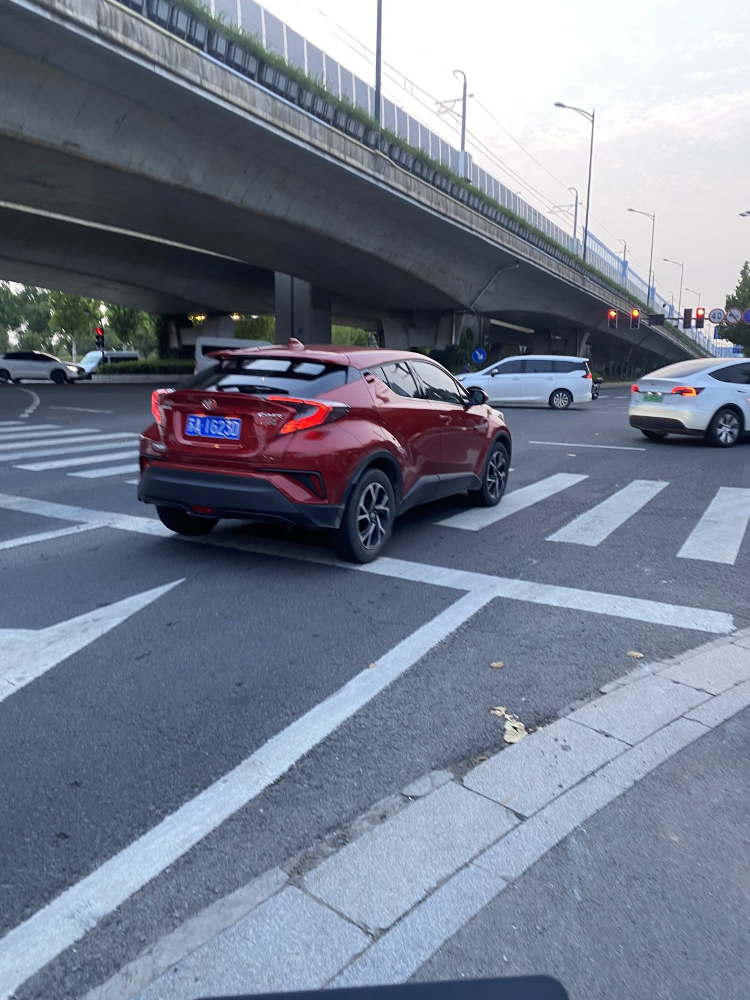
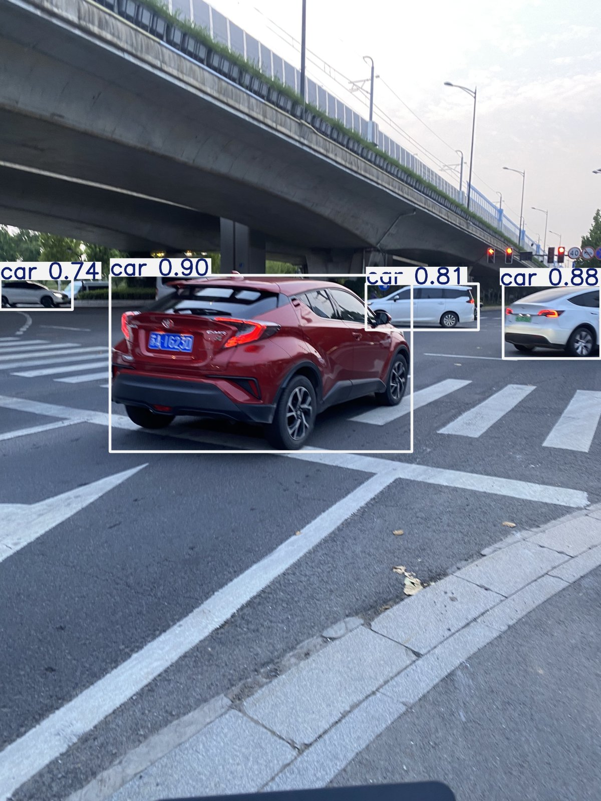
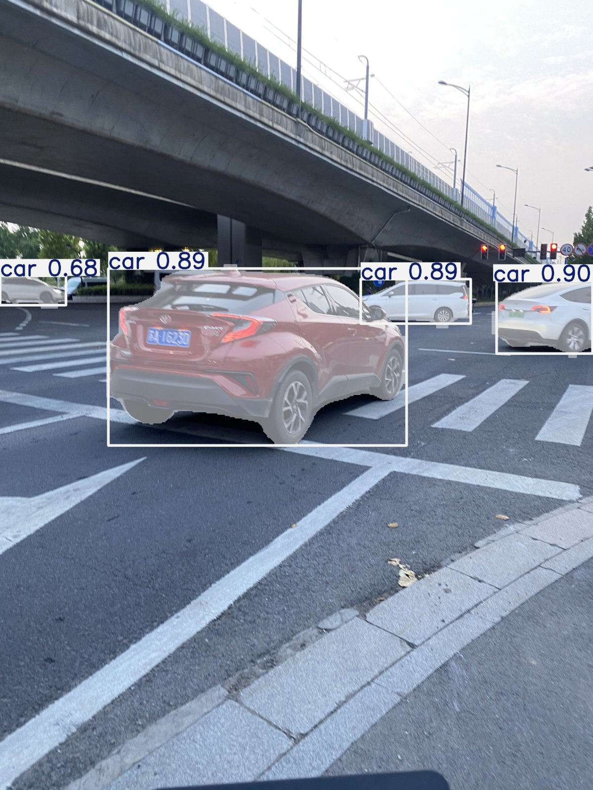
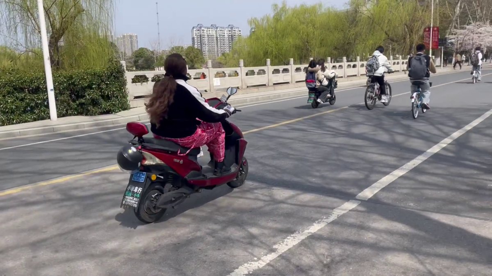
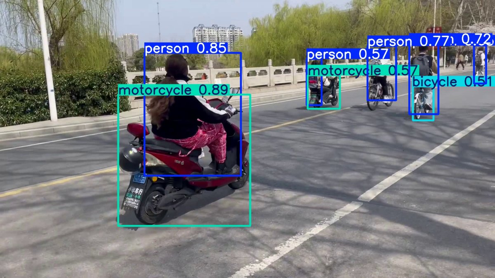
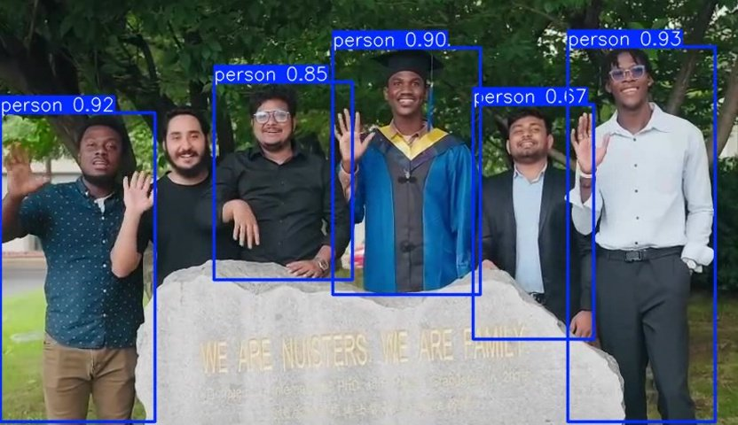
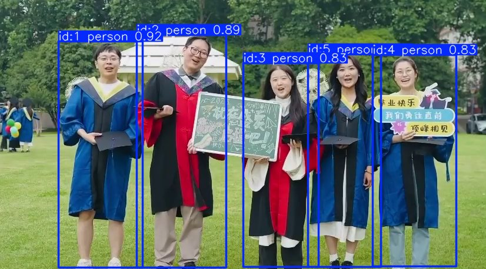

Détection d'objets
Localisation d'objets via bounding boxes sur images et vidéos, avec export JSON/CSV.
ImplémentéPortfolio de démonstration d'un pipeline complet de vision par ordinateur : détection sur image et vidéo, tracking multi-objets (ByteTrack), segmentation d'instance et pipeline de fine-tuning.
Ce portfolio présente les résultats visuels d'un projet Python orienté apprentissage de la computer vision. L'objectif : maîtriser le cycle complet — de l'inférence sur données réelles jusqu'à la préparation d'un fine-tuning custom.
Localisation d'objets via bounding boxes sur images et vidéos, avec export JSON/CSV.
ImplémentéSuivi persistant des objets entre les frames grâce à ByteTrack et des IDs uniques.
ImplémentéContours pixel-par-pixel des objets avec le modèle YOLOv8-seg.
ImplémentéPipeline d'entraînement prêt pour un dataset annoté (transfer learning depuis COCO).
Pipeline prêtFlux de données du projet, de l'entrée média jusqu'aux exports structurés.
Comparaisons avant / après sur les données de test du projet. Toutes les captures proviennent d'exécutions réelles des scripts.







Description des modèles testés et entraînés dans le cadre du projet.
| Modèle | Type | Usage | Résultat | Détail |
|---|---|---|---|---|
| yolov8n.pt | Détection | Image & vidéo — 80 classes COCO | 4 cars détectées (test) | Voir → |
| yolov8n-seg.pt | Segmentation | Masques d'instance pixel-par-pixel | 4 objets segmentés | Voir → |
| ByteTrack | Tracking | Suivi multi-objets sur vidéo | IDs persistants | Voir → |
| yolo_custom | Fine-tuning | Classes personnalisées (dataset custom) | Pipeline prêt | Voir → |
Technologies et compétences démontrées par ce projet.